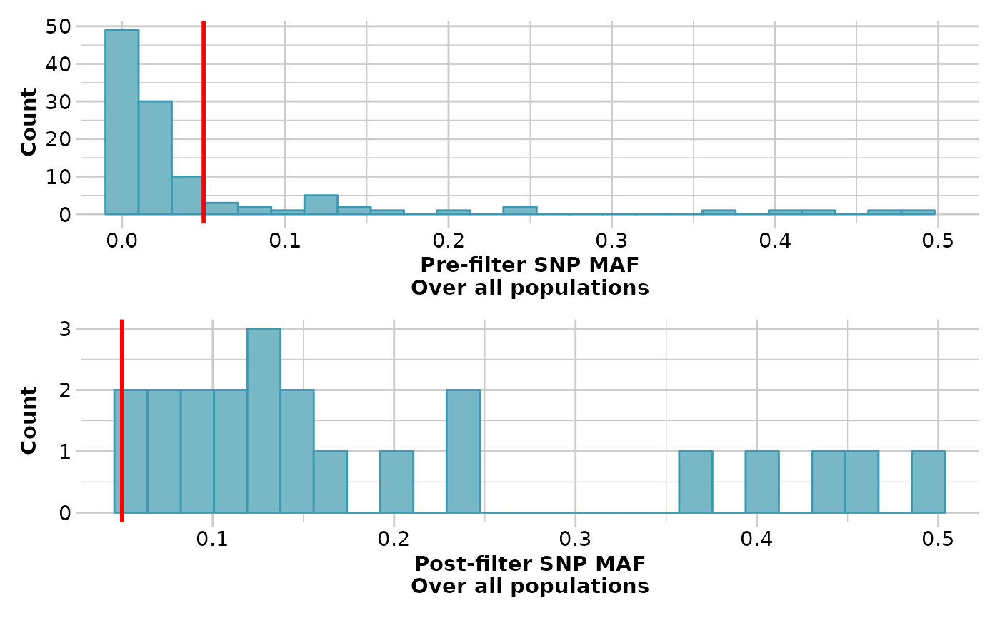

Filters loci on the basis of minor allele frequency (MAF) in a genlight adegenet object
Source:R/gl.filter.maf.r
gl.filter.maf.RdThis script calculates the minor allele frequency for each locus and updates the locus metadata for FreqHomRef, FreqHomSnp, FreqHets and MAF (if it exists). It then uses the updated metadata for MAF to filter loci.
Usage
gl.filter.maf(
x,
threshold = 0.01,
by.pop = FALSE,
pop.limit = ceiling(nPop(x)/2),
ind.limit = 10,
recalc = FALSE,
plot.out = TRUE,
plot_theme = theme_dartR(),
plot_colors_pop = discrete_palette,
plot_colors_all = two_colors,
bins = 25,
save2tmp = FALSE,
verbose = NULL
)Arguments
- x
Name of the genlight object containing the SNP data [required].
- threshold
Threshold MAF – loci with a MAF less than the threshold will be removed. If a value > 1 is provided it will be interpreted as MAC (i.e. the minimum number of times an allele needs to be observed) [default 0.01].
- by.pop
Whether MAF should be calculated by population [default FALSE].
- pop.limit
Minimum number of populations in which MAF should be less than the threshold for a locus to be filtered out. Only used if by.pop=TRUE. The default value is half of the populations [default ceiling(nPop(x)/2)].
- ind.limit
Minimum number of individuals that a population should contain to calculate MAF. Only used if by.pop=TRUE [default 10].
- recalc
Recalculate the locus metadata statistics if any individuals are deleted in the filtering [default FALSE].
- plot.out
Specify if histograms of call rate, before and after, are to be produced [default TRUE].
- plot_theme
User specified theme for the plot [default theme_dartR()].
- plot_colors_pop
A color palette for population plots [default discrete_palette].
- plot_colors_all
List of two color names for the borders and fill of the overall plot [default two_colors].
- bins
Number of bins to display in histograms [default 25].
- save2tmp
If TRUE, saves any ggplots and listings to the session temporary directory (tempdir) [default FALSE].
- verbose
Verbosity: 0, silent or fatal errors; 1, begin and end; 2, progress log; 3, progress and results summary; 5, full report [default 2, unless specified using gl.set.verbosity].
Details
Careful consideration needs to be given to the settings to be used for this
fucntion. When the filter is applied globally (i.e. by.pop=FALSE) but
the data include multiple population, there is the risk to remove markers
because the allele frequencies is low (at global level) but the allele
frequencies
for the same markers may be high within some of the populations (especially
if
the per-population sample size is small). Similarly, not always it is a
sensible choice to run this function using by.pop=TRUE because allele
that are rare in a population may be very common in other, but the (possible)
allele frequencies will depend on the sample size within each population.
Where the purpose of filtering for MAF is to remove possible spurious alleles
(i.e. sequencing errors), it is perhaps better to filter based on the number
of times an allele is observed (MAC, Minimum Allele Count), under the
assumption that if an allele is observed >MAC, it is fairly rare to be an
error.
From v2.1 The threshold can take values > 1. In this case, these are
interpreted as a threshold for MAC.
See also
Other filter functions:
gl.filter.allna(),
gl.filter.callrate(),
gl.filter.heterozygosity(),
gl.filter.hwe(),
gl.filter.ld(),
gl.filter.locmetric(),
gl.filter.monomorphs(),
gl.filter.overshoot(),
gl.filter.pa(),
gl.filter.parent.offspring(),
gl.filter.rdepth(),
gl.filter.reproducibility(),
gl.filter.secondaries(),
gl.filter.sexlinked(),
gl.filter.taglength()
Author
Custodian: Luis Mijangos – Post to https://groups.google.com/d/forum/dartr
Examples
result <- gl.filter.monomorphs(testset.gl)
#> Starting gl.filter.monomorphs
#> Processing genlight object with SNP data
#> Identifying monomorphic loci
#> Removing monomorphic loci and loci with all missing
#> data
#> Completed: gl.filter.monomorphs
#>
result <- gl.filter.maf(result, threshold=0.05, verbose=3)
#> Starting gl.filter.maf
#> Processing genlight object with SNP data
#> Removing loci with MAF < 0.05 over all the dataset
#> and recalculating FreqHoms and FreqHets
#> Summary of filtered dataset
#> MAF for loci > 0.05
#> Initial number of loci: 111
#> Number of loci deleted: 89
#> Final number of loci: 22

#> Completed: gl.filter.maf
#>